This data set represents predictors of Diabetes. This data set represents 253,680 survey responses to the CDC’s Behavioral Risk Factor Surveillance System (BRFSS) survey administered in 2015. The target variable (Diabetes_binary) takes on two values: 0 if no diabetes and 1 for diabetes or prediabetes. The data set is unbalanced, meaning that there are more observations taking on the value of no diabetes vs. diabetes or prediabetes.
The purpose of the EDA that follows is to both visually and numerically explore the relationship of variables to the target variable - the presence of diabetes. Below, I will use bar plots for categorical variables and density plots or box plots for continuous variables to visually see differences. I will also compare means and medians for continuous variables for those with and without diabetes. For categorical variables, I will calculate and compare the percentage of those that have the predictor variable in those that either have or do not have diabetes.
The ultimate goal of modeling is to find the best predictive model (logistic regression, classification tree, and random forest) that can be used in the prediction of the diagnosis of Diabetes. This is beneficial because Diabetes is a very prevalent chronic disease. By using a predictive model, we could potentially provide earlier diagnosis and/or monitor patients that have a higher likelihood of developing Diabetes due to certain risk factors.
Based on the EDA that follows, I have identified 5 significant predictors: High Blood Pressure, High Cholesterol, Heart Disease or Attack, General Health Rating, and Difficulty Walking. Information on the target variable and the predictor variables is below.
The Diabetes_binary column takes on 2 values: 0 for no diabetes and 1 for prediabetes or diabetes.
The HighBP column takes on 2 values: 0 for no high blood pressure and 1 for high blood pressure.
The HighChol column takes on 2 values: 0 for no high cholesterol and 1 for high cholesterol.
The HeartDiseaseorAttack column takes on 2 values: 0 if no coronary heart disease or myocardial infarction and 1 if have coronary heart disease or myocardial infarction.
The GenHlth column takes on 5 values based on rating of general health: 1 is excellent, 2 is very good, 3 good, 4 is fair, and 5 is poor.
The DiffWalk column takes on 2 values: 0 if no difficulty climbing stairs or walking and 1 if difficulty climbing stairs or walking.
Data
In this section, I will read in the data set and convert all appropriate variables to factors with relevant level names.
Here I will create graphical and numerical summaries on the variables above. Based on the summaries that follow, I have determined the most important variables in their relationship with Diabetes are: High Blood Pressure, High Cholesterol, Heart Disease or Attack, General Health Rating, and Difficulty Walking.
High Blood Pressure Summary
Of those without diabetes, 37.7% have high blood pressure. Of those with diabetes, 75.3% have high blood pressure. This does appear to be a significant predictor.
#Bar plot of Diabetes with HighBPggplot(diabetes_data, aes(x = Diabetes_binary, fill = HighBP)) +geom_bar()
#Numeric summary of Diabetes with HBP.#Group by having diabetes or not having diabetes.#Count the number of people with HBP in each category and divide by the total count.hbp_percent <- diabetes_data |>group_by(Diabetes_binary) |>summarize(hbp_count =sum(HighBP =="hbp"),total_count =n(),hbp_percent = (hbp_count / total_count) *100 )hbp_percent
Of those without diabetes, 38.4% have high blood pressure. Of those with diabetes, 67% have high cholesterol. This does appear to be a significant predictor.
#Bar plot of Diabetes with HighCholggplot(diabetes_data, aes(x = Diabetes_binary, fill = HighChol)) +geom_bar()
#Numeric summary of Diabetes with high cholesterol.#Group by having diabetes or not having diabetes.#Count the number of people with High Cholesterol in each category and divide by the total count.high_chol_percent <- diabetes_data |>group_by(Diabetes_binary) |>summarize(high_chol_count =sum(HighChol =="high_chol"),total_count =n(),high_chol_percent = (high_chol_count / total_count) *100 )high_chol_percent
Of those without diabetes, 95.8% have had a cholesterol check in the last five years. Of those with diabetes, 99.3% have had a cholesterol check. This does NOT appear to be a significant predictor.
#Bar plot of Diabetes with Cholesterol Check.ggplot(diabetes_data, aes(x = Diabetes_binary, fill = CholCheck)) +geom_bar()
#Numeric summary of Diabetes with Cholesterol Check.#Group by having diabetes or not having diabetes.#Count the number of people having a cholesterol check in each category and divide by the total count.chol_check_percent <- diabetes_data |>group_by(Diabetes_binary) |>summarize(chol_check_count =sum(CholCheck =="chol_check"),total_count =n(),chol_check_percent = (chol_check_count / total_count) *100 )chol_check_percent
Of those without diabetes, the mean BMI is 27.8 and standard deviation of 6.3 Of those with diabetes, the mean BMI is 31.9 with a standard deviation of 7.4 This does NOT appear to be a significant predictor.
#Numeric summary of Diabetes with BMI. #Group by having diabetes or not having diabetes.#Find the mean and median BMI in those with and without diabetes.bmi_numeric <- diabetes_data |>group_by(Diabetes_binary) |>summarize(mean_bmi =mean(BMI),median_bmi =median(BMI) )bmi_numeric
Of those without diabetes, 43.1% smoke. Of those with diabetes, 51.8% smoke. This does NOT appear to be a significant predictor.
#Bar plot of Diabetes with Smoker statusggplot(diabetes_data, aes(x = Diabetes_binary, fill = Smoker)) +geom_bar()
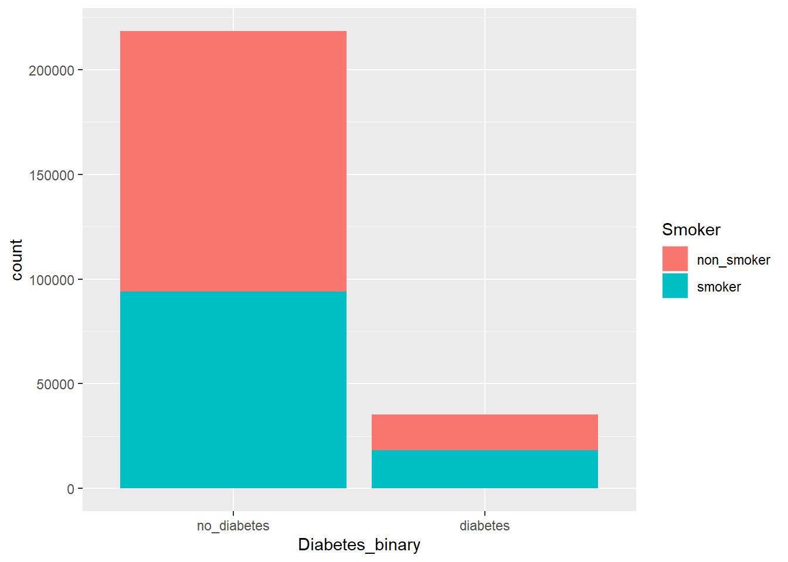
#Numeric summary of Diabetes with Smoker status. #Group by having diabetes or not having diabetes.#Count the number of people who smoke in each category and divide by the total count.smoker_percent <- diabetes_data |>group_by(Diabetes_binary) |>summarize(smoker_count =sum(Smoker =="smoker"),total_count =n(),smoker_percent = (smoker_count / total_count) *100 )smoker_percent
Of those without diabetes, 3.22% have had a stroke. Of those with diabetes, 9.25% have had a stroke. This does NOT appear to be a significant predictor.
#Bar plot of Diabetes with Incidence of Strokeggplot(diabetes_data, aes(x = Diabetes_binary, fill = Stroke)) +geom_bar()
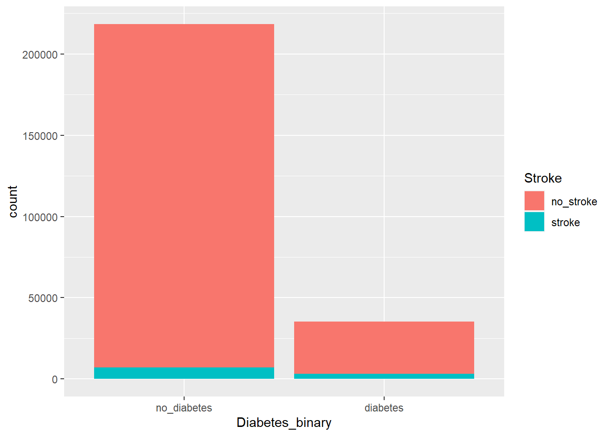
#Numeric summary of Diabetes with incidence of stroke. #Group by having diabetes or not having diabetes.#Count the number of people who have had a stroke in each category and divide by the total count.stroke_percent <- diabetes_data |>group_by(Diabetes_binary) |>summarize(stroke_count =sum(Stroke =="stroke"),total_count =n(),stroke_percent = (stroke_count / total_count) *100 )stroke_percent
Of those without diabetes, 7.34% have heart disease or have had a heart attack. Of those with diabetes, 22.3% have heart disease or have had a heart attack. This does appear to be a significant predictor.
#Bar plot of Diabetes with Heart Disease or Attackggplot(diabetes_data, aes(x = Diabetes_binary, fill = HeartDiseaseorAttack)) +geom_bar()
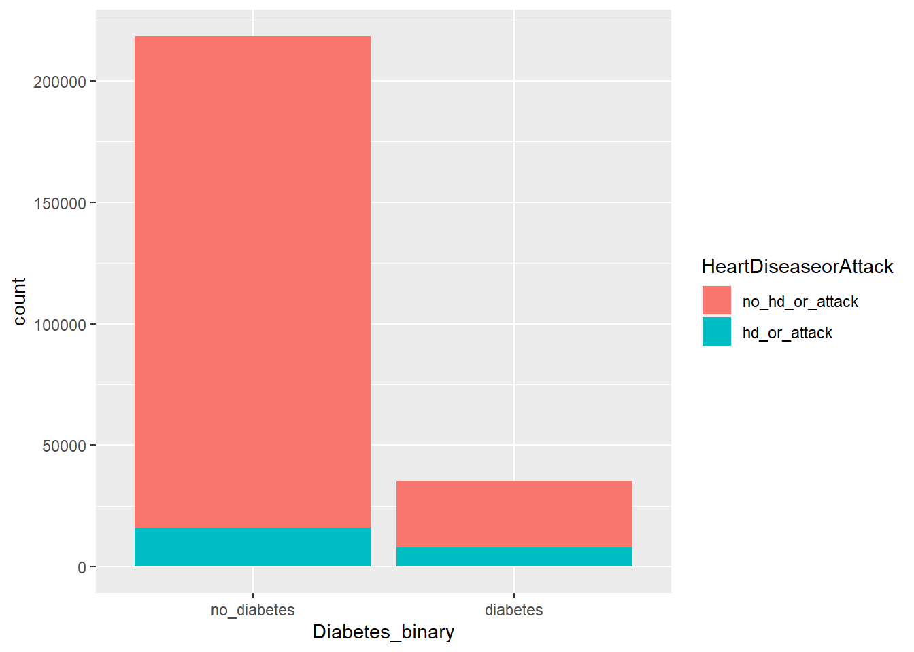
#Numeric summary of Diabetes with incidence of heart disease or attack. #Group by having diabetes or not having diabetes.#Count the number of people who have heart disease or attack in each category and divide by the total count.hd_or_attack_percent <- diabetes_data |>group_by(Diabetes_binary) |>summarize(hd_or_attack_count =sum(HeartDiseaseorAttack =="hd_or_attack"),total_count =n(),hd_or_attack_percent = (hd_or_attack_count / total_count) *100 )hd_or_attack_percent
Of those without diabetes, 77.7% have exercised in the last 30 days outside of their job. Of those with diabetes, 63.1% have exercised in the last 30 days outside of their job. This does NOT appear to be a significant predictor.
#Bar plot of Diabetes with Physical Activityggplot(diabetes_data, aes(x = Diabetes_binary, fill = PhysActivity)) +geom_bar()
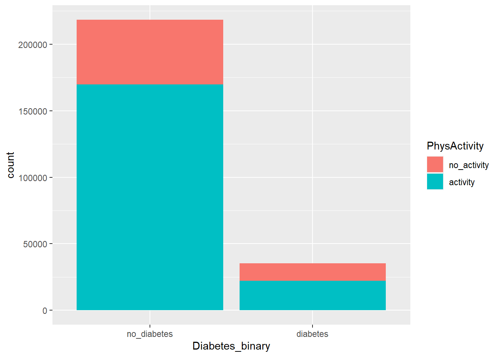
#Numeric summary of diabetes with physical activity.#Group by having diabetes or not having diabetes.#Count the number of people who have done physical activity in the last 30 days in each category and divide by the total count.activity_percent <- diabetes_data |>group_by(Diabetes_binary) |>summarize(activity_count =sum(PhysActivity =="activity"),total_count =n(),activity_percent = (activity_count / total_count) *100 )activity_percent
Of those without diabetes, 64.2% eat fruit at least once per day. Of those with diabetes, 58.5% eat fruit at least once per day. This does NOT appear to be a significant predictor.
#Bar plot of Diabetes with Fruitsggplot(diabetes_data, aes(x = Diabetes_binary, fill = Fruits)) +geom_bar()
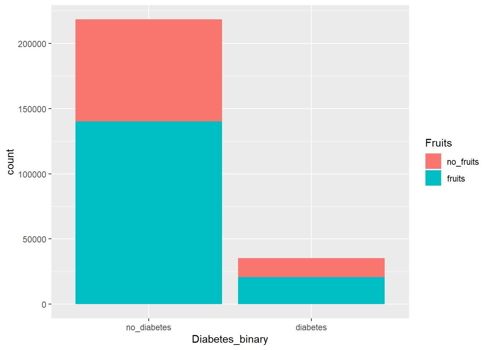
#Numeric summary with fruits. #Group by having diabetes or not having diabetes.#Count the number of people who eat fruit each day in each category and divide by the total count.fruit_percent <- diabetes_data |>group_by(Diabetes_binary) |>summarize(fruit_count =sum(Fruits =="fruits"),total_count =n(),fruit_percent = (fruit_count / total_count) *100 )fruit_percent
Of those without diabetes, 82% eat vegetables at least once per day. Of those with diabetes, 75.6% eat vegetables at least once per day. This does NOT appear to be a significant predictor.
#Bar plot of Diabetes with Veggiesggplot(diabetes_data, aes(x = Diabetes_binary, fill = Veggies)) +geom_bar()
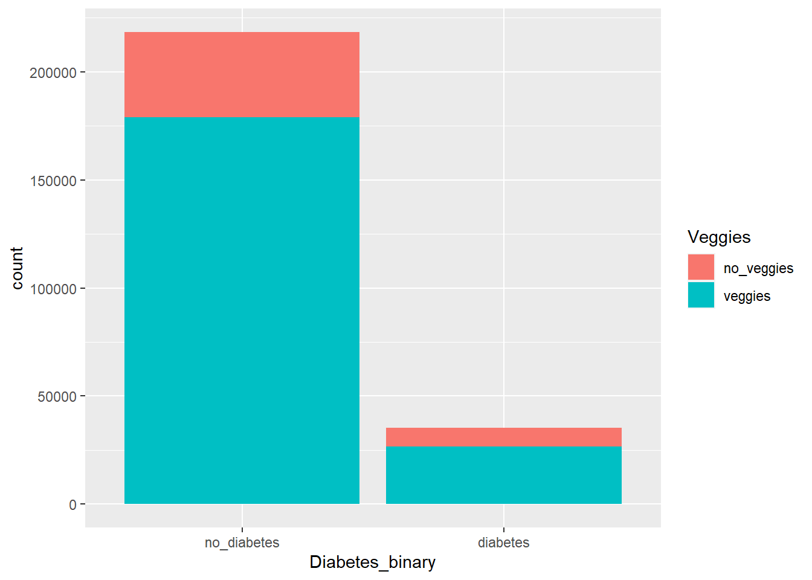
#Numeric summary of diabetes with veggies.#Group by having diabetes or not having diabetes.#Count the number of people who eat vegetables daily in each category and divide by the total count.veggies_percent <- diabetes_data |>group_by(Diabetes_binary) |>summarize(veggies_count =sum(Veggies =="veggies"),total_count =n(),veggies_percent = (veggies_count / total_count) *100 )veggies_percent
Of those without diabetes, 6.15% drink at least 14 drinks per week (male) or at least 7 drinks per week (female). Of those with diabetes, 2.35% drink at least 14 drinks per week (male) or at least 7 drinks per week (female). This does not appear to be a significant predictor.
#Bar plot of Diabetes with Heavy Alcohol Consumptionggplot(diabetes_data, aes(x = Diabetes_binary, fill = HvyAlcoholConsump)) +geom_bar()
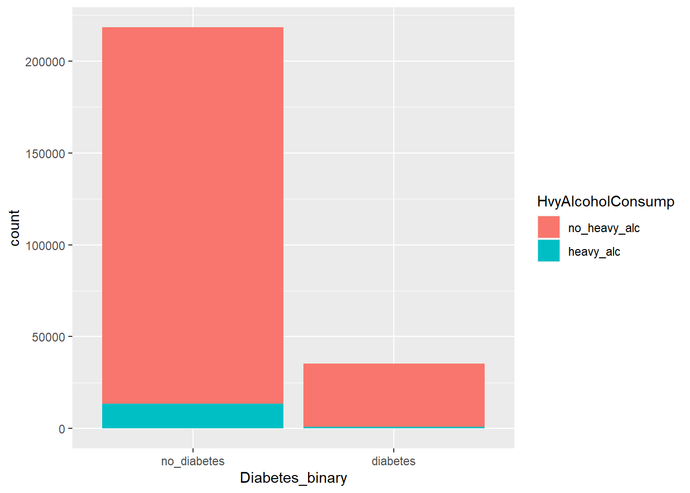
#Numeric summary of diabetes with heavy alcohol consumers.#Group by having diabetes or not having diabetes.#Count the number of people who heavily drink alcohol in each category and divide by the total count.alcohol_percent <- diabetes_data |>group_by(Diabetes_binary) |>summarize(alcohol_count =sum(HvyAlcoholConsump =="heavy_alc"),total_count =n(),alcohol_percent = (alcohol_count / total_count) *100 )alcohol_percent
Of those without diabetes, 95% have health coverage. Of those with diabetes, 96% have health coverage. This does NOT appear to be a significant predictor.
#Bar plot of Diabetes with Healthcareggplot(diabetes_data, aes(x = Diabetes_binary, fill = AnyHealthcare)) +geom_bar()
#Numeric summary of diabetes with healthcare coverage.#Group by having diabetes or not having diabetes.#Count the number of people with healthcare coverage in each category and divide by the total count.healthcare_percent <- diabetes_data |>group_by(Diabetes_binary) |>summarize(healthcare_count =sum(AnyHealthcare =="healthcare"),total_count =n(),healthcare_percent = (healthcare_count / total_count) *100 )healthcare_percent
Of those without diabetes, 8.07% have avoided the doctor because of cost. Of those with diabetes, 10.6% have avoided the doctor because of cost. This does not appear to be a significant predictor.
#Bar plot of Diabetes with No Doctor because Costggplot(diabetes_data, aes(x = Diabetes_binary, fill = NoDocbcCost)) +geom_bar()
#Numeric summary of Diabetes with No Doctor because cost.#Group by having diabetes or not having diabetes.#Count the number of people with a cost issue in each category and divide by the total count.doc_cost_percent <- diabetes_data |>group_by(Diabetes_binary) |>summarize(doc_cost_count =sum(NoDocbcCost =="cost_issue"),total_count =n(),doc_cost_percent = (doc_cost_count / total_count) *100 )doc_cost_percent
Of those without diabetes, 20.2% rate their general health as excellent. Of those with diabetes, 3.22% rate their general health as excellent. Of those without diabetes, 37.9% rate their general health as very good. Of those with diabetes, 18.1% rate their general health as very good. Of those without diabetes, 28.5% rate their general health as good. Of those with diabetes, 28.1% rate their general health as good. Of those without diabetes, 9.98% rate their general health as fair. Of those with diabetes, 27.7% rate their general health as fair. Of those without diabetes, 3.4% rate their general health as poor. Of those with diabetes, 12.95% rate their general health as excellent. This does appear to be a significant predictor.
#Bar plot of Diabetes with General Healthggplot(diabetes_data, aes(x = Diabetes_binary, fill = GenHlth)) +geom_bar()
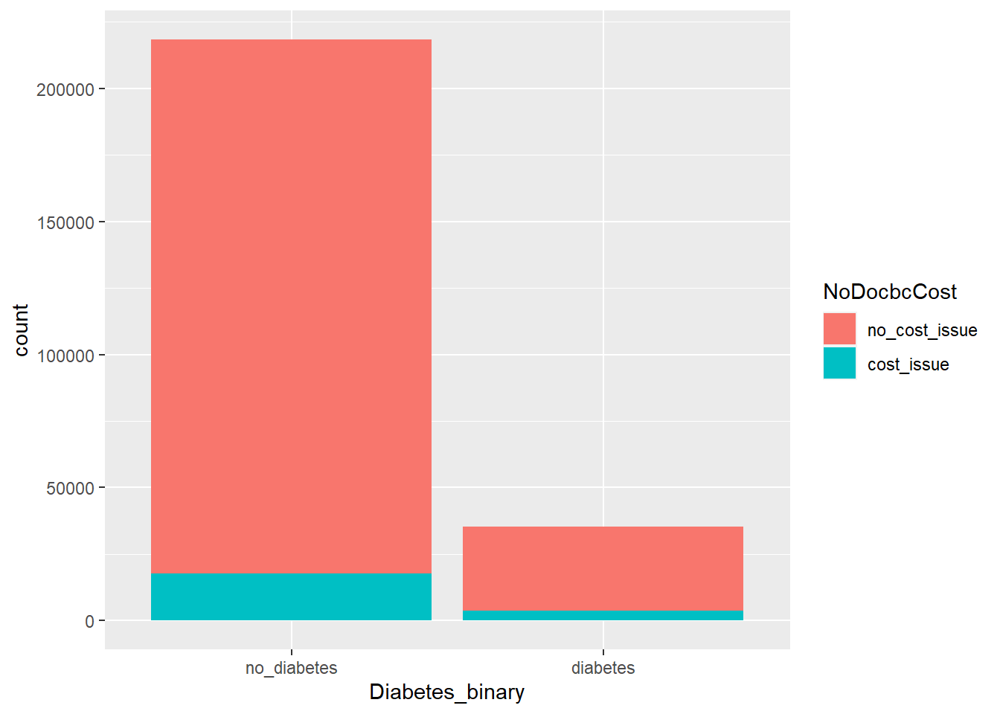
#Numeric summary of Diabetes with General Health Rating#Group by having diabetes or not having diabetes.#Count the number of people with each level of general health rating (excellent to poor) in each category and divide by the total count.general_health_percent <- diabetes_data |>group_by(Diabetes_binary) |>summarize(total_count =n(),excellent_count =sum(GenHlth =="excellent"),excellent_percent = (excellent_count / total_count) *100,very_good_count =sum(GenHlth =="very_good"),very_good_percent = (very_good_count / total_count) *100,good_count =sum(GenHlth =="good"),good_percent = (good_count / total_count) *100,fair_count =sum(GenHlth =="fair"),fair_percent = (fair_count / total_count) *100,poor_count =sum(GenHlth =="poor"),poor_percent = (poor_count / total_count) *100 )general_health_percent
Of those without diabetes, they have an average of 2.97 bad mental health days per month. Of those with diabetes, they have an average of 4.46 bad mental health days per month. This does not appear to be a significant predictor.
#Mental Health Daysggplot(diabetes_data, aes(x = MentHlth, fill = Diabetes_binary)) +geom_boxplot()
#Mental Health Days Numeric Summary#Group by having diabetes or not having diabetes.#Find the mean and median bad mental health days in those with and without diabetes. mental_health_num <- diabetes_data |>group_by(Diabetes_binary) |>summarize(mean_mental_hlth =mean(MentHlth),median_mental_hlth =median(MentHlth) )mental_health_num
Physical Illness or Injury in the Last 30 Days Summary
Of those without diabetes, they have an average of 3.64 days of physical illness or injury in the last 30 days. Of those with diabetes, they have an average of 7.95 days of physical illness or injury in the last 30 days. This does not appear to be a significant predictor.
#Physical Illness or Injury in last 30 daysggplot(diabetes_data, aes(x = PhysHlth, fill = Diabetes_binary)) +geom_boxplot()
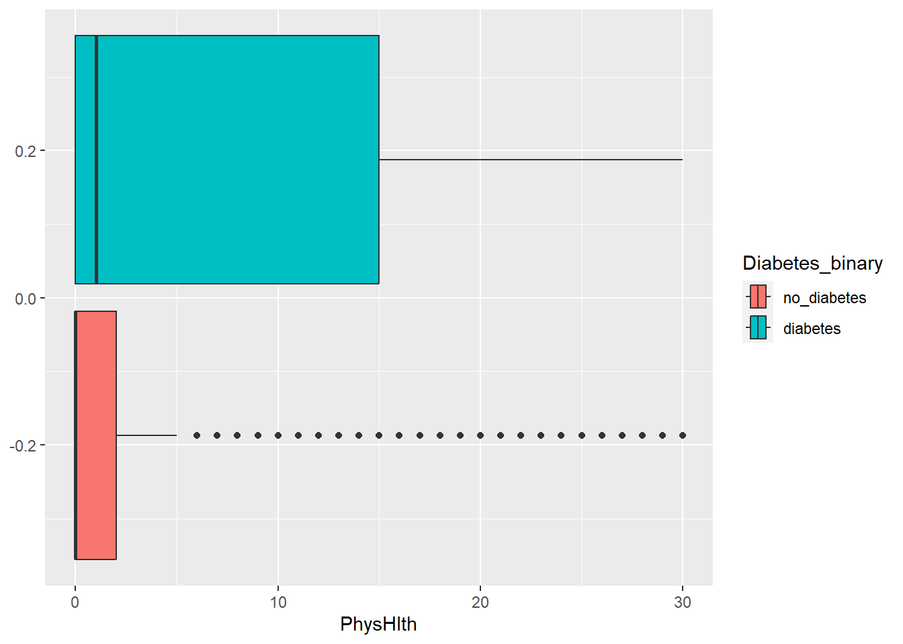
#Numeric Summary for Physical Illness or Injury or Last 30 Days#Group by having diabetes or not having diabetes.#Find the mean and median days of physical illness and injury in the last 30 days in those with and without diabetes.phys_health_num <- diabetes_data |>group_by(Diabetes_binary) |>summarize(mean_phys_hlth =mean(PhysHlth),median_phys_hlth =median(PhysHlth) )phys_health_num
Of those without diabetes, 13.5% have difficulty walking. Of those with diabetes, 37.1% have difficulty walking. This does appear to be a significant predictor.
#Bar plot of Diabetes with Difficulty Walkingggplot(diabetes_data, aes(x = Diabetes_binary, fill = DiffWalk)) +geom_bar()
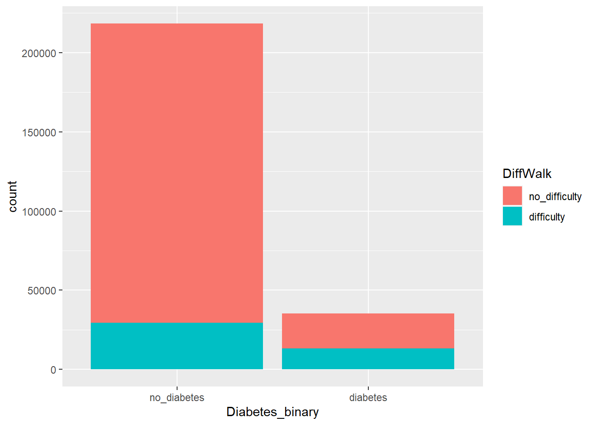
#Numeric summary of Diabetes with Difficulty Walking.#Group by having diabetes or not having diabetes.#Count the number of people with difficulty walking in each category and divide by the total count.walking_percent <- diabetes_data |>group_by(Diabetes_binary) |>summarize(walking_count =sum(DiffWalk =="difficulty"),total_count =n(),walking_percent = (walking_count / total_count) *100 )walking_percent
Of those without diabetes, 56.6% are female. Of those with diabetes, 52.1% are female. This does not appear to be a significant predictor.
#Bar plot of Diabetes with Sexggplot(diabetes_data, aes(x = Diabetes_binary, fill = Sex)) +geom_bar()
#Numeric summary of Diabetes with Sex.#Group by having diabetes or not having diabetes.#Count the number of females in each category and divide by the total count.sex_percent <- diabetes_data |>group_by(Diabetes_binary) |>summarize(sex_count =sum(Sex =="female"),total_count =n(),sex_percent = (sex_count / total_count) *100 )sex_percent
Of those without diabetes, 0.06% have no education. Of those with diabetes, 0.13% have no education. Of those without diabetes, 1.3% have an elementary education. Of those with diabetes, 3.3% have an elementary education. Of those without diabetes, 3.3% have some high school education. Of those with diabetes, 6.5% have some high school education. Of those without diabetes, 23.7% have a high school education. Of those with diabetes, 31.3% have a high school education. Of those without diabetes, 27.3% have some college education. Of those with diabetes, 29.3% have some college education. Of those without diabetes, 44.4% have completed a college education. Of those with diabetes, 29.4% have completed a college education.
#Bar plot of Diabetes with Educationggplot(diabetes_data, aes(x = Diabetes_binary, fill = Education)) +geom_bar()
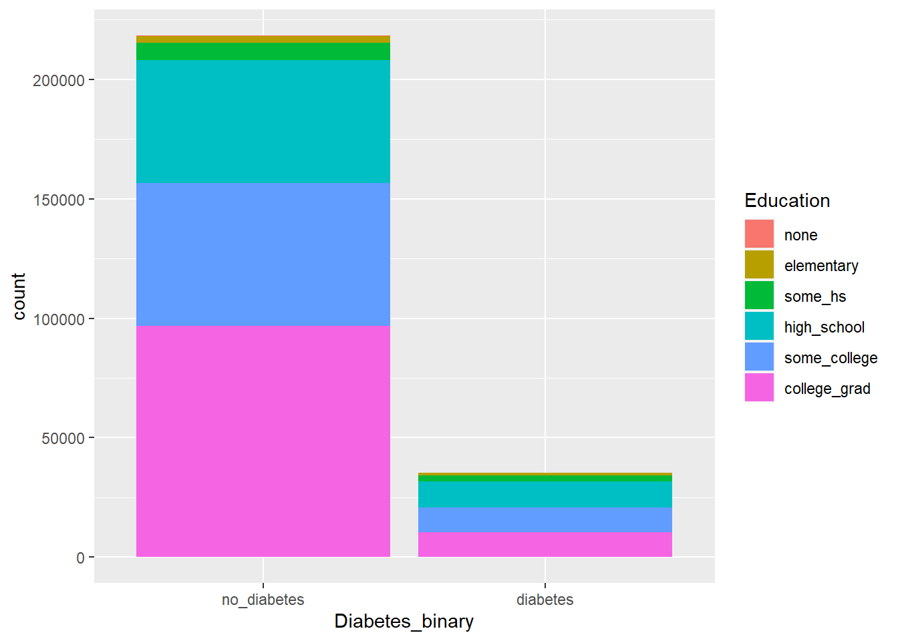
#Numeric Summary of Diabetes with Education#Group by having diabetes or not having diabetes.#Count the number of people in each category of education (none - college graduate) in those with and without diabetes and divide by the total count.edu_percent <- diabetes_data |>group_by(Diabetes_binary) |>summarize(total_count =n(),none_count =sum(Education =="none"),none_percent = (none_count / total_count) *100,elem_count =sum(Education =="elementary"),elem_percent = (elem_count / total_count) *100,some_hs_count =sum(Education =="some_hs"),some_hs_percent = (some_hs_count / total_count) *100,hs_count =sum(Education =="high_school"),hs_percent = (hs_count / total_count) *100,some_college_count =sum(Education =="some_college"),some_college_percent = (some_college_count / total_count) *100,college_grad_count =sum(Education =="college_grad"),college_grad_percent = (college_grad_count / total_count) *100 )edu_percent
Of those without diabetes, 3.4% make less than 10,000 dollars per year. Of those with diabetes, 6.7% make less than 10,000 dollars per year. Of those without diabetes, 3.98% make between10,000 and 15,000 dollars per year. Of those with diabetes, 6.73% make between 10,000 and 15,000 dollars per year. Of those without diabetes, 5.7% make between 15,000 and 20,000 dollars per year. Of those with diabetes, 10.1% make between 15,000 and 20,000 dollars per year. Of those without diabetes, 7.4% make between 20,000 and 25,000 dollars per year. Of those with diabetes, 11.5% make between 20,000 and 25,000 dollars per year. Of those without diabetes, 9.8% make between 25,000 and 35,000 dollars per year. Of those with diabetes, 12.7% make between 25,000 and 35,000 dollars per year. Of those without diabetes, 14.28% make between 35,000 and 50,000 dollars per year Of those with diabetes, 14.96% make between 35,000 and 50,000 dollars per year. Of those without diabetes, 17.4% make between 50,000 and 75,000 dollars per year Of those with diabetes, 14.9% make between 50,000 and 75,000 dollars per year. Of those without diabetes, 38.1% make more than 75,000 dollars per year. Of those with diabetes, 20.4% more than 75,000 dollars per year.
#Bar plot of Diabetes with Incomeggplot(diabetes_data, aes(x = Diabetes_binary, fill = Income)) +geom_bar()
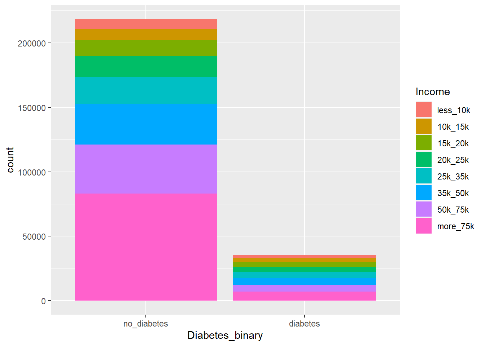
#Numeric Summary of Diabetes with Income#Group by having diabetes or not having diabetes.#Count the number of people in each category of income (less than 10k - more than 75k) in those with and without diabetes and divide by the total count.income_percent <- diabetes_data |>group_by(Diabetes_binary) |>summarize(total_count =n(),less_10k_count =sum(Income =="less_10k"),less_10k_percent = (less_10k_count / total_count) *100,ten_fifteen_count =sum(Income =="10k_15k"),ten_fifteen_percent = (ten_fifteen_count / total_count) *100,fifteen_twenty_count =sum(Income =="15k_20k"),fifteen_twenty_percent = (fifteen_twenty_count / total_count) *100,twenty_twentyfive_count =sum(Income =="20k_25k"),twenty_twentyfive_percent = (twenty_twentyfive_count / total_count) *100,twentyfive_thirtyfive_count =sum(Income =="25k_35k"),twentyfive_thirtyfive_percent = (twentyfive_thirtyfive_count / total_count) *100,thirtyfive_fifty_count =sum(Income =="35k_50k"),thirtyfive_fifty_percent = (thirtyfive_fifty_count / total_count) *100,fifty_seventyfive_count =sum(Income =="50k_75k"),fifty_seventyfive_percent = (fifty_seventyfive_count / total_count) *100,greater_seventyfive_count =sum(Income =="more_75k"),greater_seventyfive_percent = (greater_seventyfive_count / total_count) *100 )income_percent